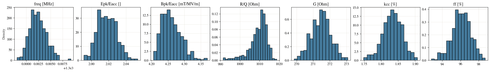
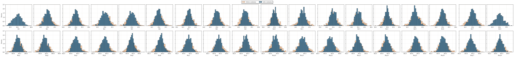
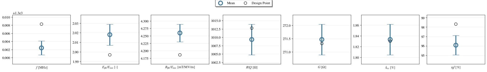
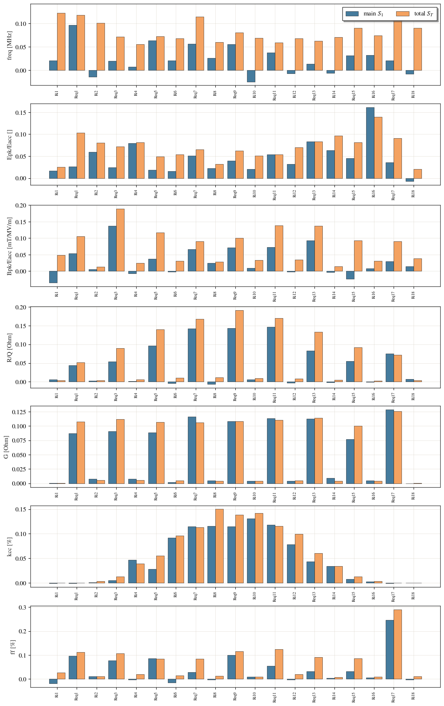
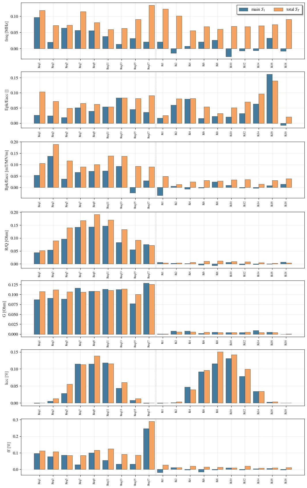
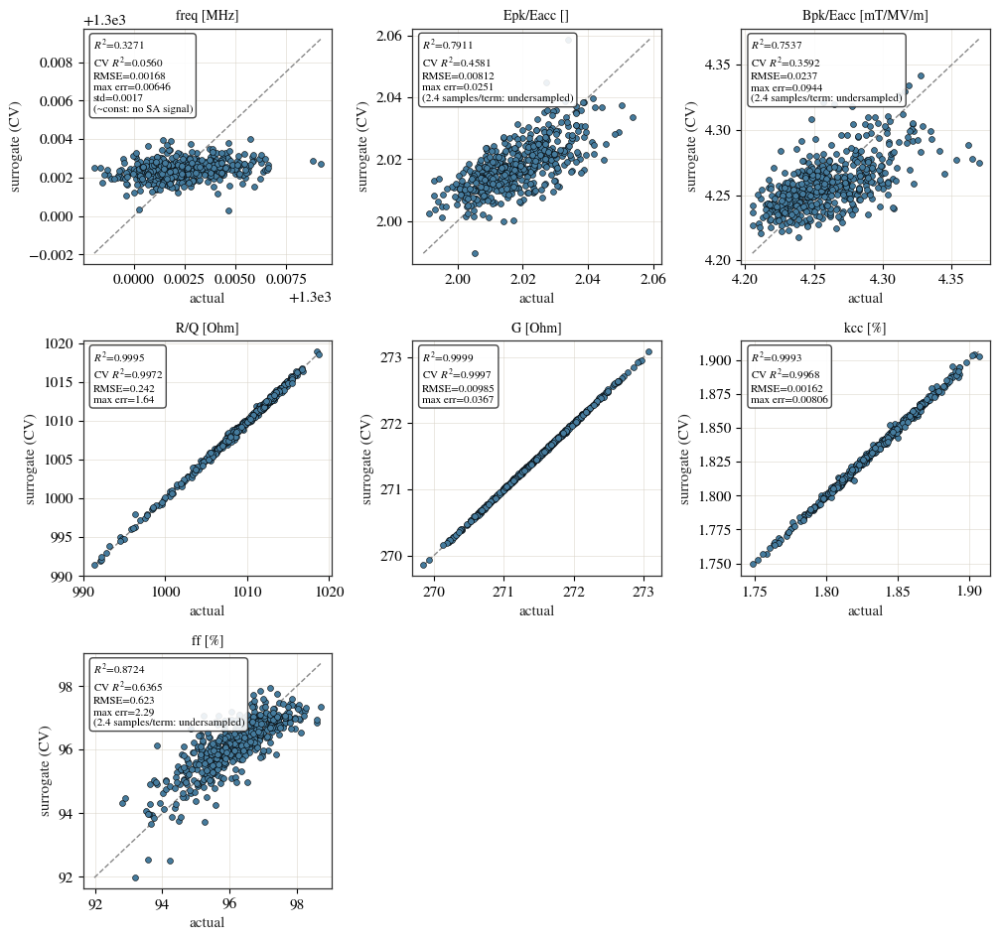
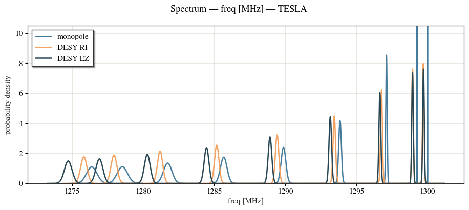
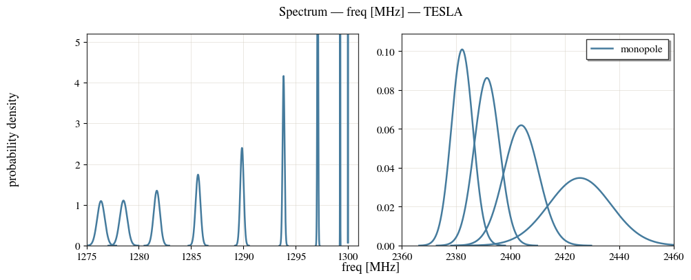

Multicell UQ and sensitivity analysis (WEPB015)¶
This example reproduces the workflow of
S. Udongwo and U. van Rienen, Multicell parameterisation for sensitivity analysis and uncertainty quantification of accelerator cavities, IPAC 2025, WEPB015. doi:10.18429/JACoW-IPAC2025-WEPB015
Real cavities are welded from separately-manufactured dumb-bells (half-cells), so manufacturing tolerances perturb each half-cell independently. The multicell parameterisation gives every half-cell its own variables; continuity at the welded irises and equators is then restored by averaging the joined half-cells. This example:
perturbs the iris (
Ri) and equator (Req) radii of every half-cell independently and welds them back (Monte-Carlo),plots the figure-of-merit distributions (Fig. 3) and the before/after-continuity node spread (Fig. 4),
summarises each FM as a mean ± standard deviation with the nominal design point (Fig. 5),
ranks the inputs by Sobol’ sensitivity indices (Fig. 6), and
overlays the accelerating TM\(_{010}\) passband on the European XFEL measurements of Corno et al.
It runs the paper’s 9-cell TESLA cavity (so the TM\(_{010}\) passband matches the European XFEL data), but with a small Monte-Carlo sample count so the docs build in reasonable time. Raise
N_SAMPLESto ~900 to reproduce the paper’s numbers (much slower). At this small sample count some figure-of-merit surrogates are under-resolved — the surrogate-quality check below makes that explicit.
import os
import tempfile
import numpy as np
import matplotlib.pyplot as plt
from cavsim2d import Study, EllipticalCavity
from cavsim2d.utils.style import apply_style
apply_style()
N_SAMPLES = 500 # Monte-Carlo geometries (small for a quick docs build; ~900 for the paper)
1. The cavity and the uncertainty¶
A TESLA-like cell in a one-cavity study (UQ perturbs the geometry, so it runs through Study). The uq_config uses the multicell complexity with independent_half_cells=True: each half-cell’s Ri/Req is drawn from a Gaussian (σ = 0.3 mm, method=['normal', N]), then the shared seams are welded (averaged). Setting the objectives to the figures of merit records them for every perturbed geometry in uq/table.csv.
The mesh is h = 20 mm at polynomial order p = 4. The order matters more than the element size here, and specifically for the peak-field ratios: Epk/Eacc and Bpk/Eacc are maxima of the surface field, and a maximum is only as accurate as the field itself, whereas R/Q and G are integrals and converge much sooner. At p = 2 the peak ratios of this cavity still swing by about a percent from mesh to mesh — more than a 0.3 mm tolerance moves them — so the sensitivity analysis below would be fitting discretisation noise. Raising the order costs almost nothing (21 000 degrees of freedom against 13 000 at p = 3, and the same solve time) and removes it.
cavs = Study(os.path.join(tempfile.mkdtemp(), 'multicell_uq'))
midcell = [42, 42, 12, 19, 35, 57.652, 103.3536] # <- A, B, a, b, Ri, L, Req
endcell_l = [40.34, 40.34, 10, 13.5, 39, 55.7251, 103.3536]
endcell_r = [42, 42, 9, 12.8, 39, 56.8407, 103.3536]
cav = EllipticalCavity(9, midcell, endcell_l, endcell_r, beampipe='both', name='tesla')
cavs.add_cavity([cav], ['TESLA'])
tune_config = {'freqs': 1300}
cavs.run_eigenmode({
'n_cells': 9, 'processes': 1, 'boundary_conditions': 'mm',
'mesh_config': {'h': 20, 'p': 4}, # peak fields need a high order (see above)
'uq_config': {
'cell_complexity': 'multicell',
'independent_half_cells': True,
'variables': ['Ri', 'Req'],
'method': ['normal', N_SAMPLES],
'perturbation_mode': ['add', 0.3], # sigma = 0.3 mm
'delta': [0.3, 0.3],
'objectives': ['monopole:freq [MHz]', 'monopole:Epk/Eacc []',
'monopole:Bpk/Eacc [mT/MV/m]', 'monopole:R/Q [Ohm]',
'monopole:G [Ohm]', 'monopole:kcc [%]',
'monopole:ff [%]'],
'processes': 12,
'tune_config': tune_config
},
})
2. Figure-of-merit distributions (paper Fig. 3)¶
Each perturbed geometry contributes one row to uq/table.csv; the histogram of every figure of merit shows how the tolerance band spreads the RF performance.
cav.eigenmode.plot_fm_distribution()

{'monopole:freq [MHz]': <Axes: label='monopole:freq [MHz]', title={'center': 'freq [MHz]'}, ylabel='Density'>,
'monopole:Epk/Eacc []': <Axes: label='monopole:Epk/Eacc []', title={'center': 'Epk/Eacc []'}>,
'monopole:Bpk/Eacc [mT/MV/m]': <Axes: label='monopole:Bpk/Eacc [mT/MV/m]', title={'center': 'Bpk/Eacc [mT/MV/m]'}>,
'monopole:R/Q [Ohm]': <Axes: label='monopole:R/Q [Ohm]', title={'center': 'R/Q [Ohm]'}>,
'monopole:G [Ohm]': <Axes: label='monopole:G [Ohm]', title={'center': 'G [Ohm]'}>,
'monopole:kcc [%]': <Axes: label='monopole:kcc [%]', title={'center': 'kcc [%]'}>,
'monopole:ff [%]': <Axes: label='monopole:ff [%]', title={'center': 'ff [%]'}>}
3. Before vs after welding (paper Fig. 4)¶
Each half-cell’s radius is perturbed independently (before continuity); welding averages the two half-cells that meet at a shared equator, which narrows that distribution. The apertures (Ri) of a single cell are not shared, so their before/after distributions coincide; the equator (Req) is shared and visibly tightens.
cav.eigenmode.plot_node_distribution(['Ri', 'Req'])

{'Ri1': <Axes: label='Ri1', xlabel='Ri1', ylabel='Density'>,
'Ri2': <Axes: label='Ri2', xlabel='Ri2'>,
'Ri3': <Axes: label='Ri3', xlabel='Ri3'>,
'Ri4': <Axes: label='Ri4', xlabel='Ri4'>,
'Ri5': <Axes: label='Ri5', xlabel='Ri5'>,
'Ri6': <Axes: label='Ri6', xlabel='Ri6'>,
'Ri7': <Axes: label='Ri7', xlabel='Ri7'>,
'Ri8': <Axes: label='Ri8', xlabel='Ri8'>,
'Ri9': <Axes: label='Ri9', xlabel='Ri9'>,
'Ri10': <Axes: label='Ri10', xlabel='Ri10'>,
'Ri11': <Axes: label='Ri11', xlabel='Ri11'>,
'Ri12': <Axes: label='Ri12', xlabel='Ri12'>,
'Ri13': <Axes: label='Ri13', xlabel='Ri13'>,
'Ri14': <Axes: label='Ri14', xlabel='Ri14'>,
'Ri15': <Axes: label='Ri15', xlabel='Ri15'>,
'Ri16': <Axes: label='Ri16', xlabel='Ri16'>,
'Ri17': <Axes: label='Ri17', xlabel='Ri17'>,
'Ri18': <Axes: label='Ri18', xlabel='Ri18'>,
'Req1': <Axes: label='Req1', xlabel='Req1', ylabel='Density'>,
'Req2': <Axes: label='Req2', xlabel='Req2'>,
'Req3': <Axes: label='Req3', xlabel='Req3'>,
'Req4': <Axes: label='Req4', xlabel='Req4'>,
'Req5': <Axes: label='Req5', xlabel='Req5'>,
'Req6': <Axes: label='Req6', xlabel='Req6'>,
'Req7': <Axes: label='Req7', xlabel='Req7'>,
'Req8': <Axes: label='Req8', xlabel='Req8'>,
'Req9': <Axes: label='Req9', xlabel='Req9'>,
'Req10': <Axes: label='Req10', xlabel='Req10'>,
'Req11': <Axes: label='Req11', xlabel='Req11'>,
'Req12': <Axes: label='Req12', xlabel='Req12'>,
'Req13': <Axes: label='Req13', xlabel='Req13'>,
'Req14': <Axes: label='Req14', xlabel='Req14'>,
'Req15': <Axes: label='Req15', xlabel='Req15'>,
'Req16': <Axes: label='Req16', xlabel='Req16'>,
'Req17': <Axes: label='Req17', xlabel='Req17'>,
'Req18': <Axes: label='Req18', xlabel='Req18'>}
4. Mean and standard deviation (paper Fig. 5)¶
The built-in UQ figure-of-merit plot: each QOI as a mean with a ±1σ error bar and the nominal design point.
cav.eigenmode.plot_fm_scatter(uq=True)

{'monopole:freq [MHz]': <Axes: label='monopole:freq [MHz]', xlabel='$f$ [MHz]'>,
'monopole:Epk/Eacc []': <Axes: label='monopole:Epk/Eacc []', xlabel='$E_\\mathrm{pk}/E_\\mathrm{acc} ~[\\cdot]$'>,
'monopole:Bpk/Eacc [mT/MV/m]': <Axes: label='monopole:Bpk/Eacc [mT/MV/m]', xlabel='$B_\\mathrm{pk}/E_\\mathrm{acc} ~\\mathrm{[mT/MV/m]}$'>,
'monopole:R/Q [Ohm]': <Axes: label='monopole:R/Q [Ohm]', xlabel='$R/Q ~\\mathrm{[\\Omega]}$'>,
'monopole:G [Ohm]': <Axes: label='monopole:G [Ohm]', xlabel='$G ~\\mathrm{[\\Omega]}$'>,
'monopole:kcc [%]': <Axes: label='monopole:kcc [%]', xlabel='$k_\\mathrm{cc}$ [%]'>,
'monopole:ff [%]': <Axes: label='monopole:ff [%]', xlabel='$\\eta_ff$ [%]'>}
5. Sobol’ sensitivity indices (paper Fig. 6)¶
run_sensitivity fits a low-order polynomial surrogate to the samples (uq/nodes.csv -> uq/table.csv) and evaluates Sobol’ main (\(S_1\)) and total (\(S_T\)) indices over a Saltelli quasi-Monte-Carlo design — the paper’s PCE + QMC method, made cheap. R/Q and G are dominated by the equator radii, the peak-field ratios by the irises. A wide \(S_1\)–\(S_T\) gap flags higher-order interactions.
By default the bars follow the order the inputs were sampled in, which for a multicell interleaves the two variables along the cavity (Ri1, Req1, Ri2, …). Pass sort_by='variable' to put every Req before every Ri, as in the paper’s Fig. 6, which is the view to use when you want to read one variable’s profile from end cell to end cell. sort_by='S1' or 'ST' instead ranks the inputs by influence.
sobol = cav.eigenmode.run_sensitivity(N=256)
cav.eigenmode.plot_sobol_indices() # sampling order (default)

array([<Axes: ylabel='freq [MHz]'>, <Axes: ylabel='Epk/Eacc []'>,
<Axes: ylabel='Bpk/Eacc [mT/MV/m]'>, <Axes: ylabel='R/Q [Ohm]'>,
<Axes: ylabel='G [Ohm]'>, <Axes: ylabel='kcc [%]'>,
<Axes: ylabel='ff [%]'>], dtype=object)
cav.eigenmode.plot_sobol_indices(sort_by='variable') # all Req, then all Ri

array([<Axes: ylabel='freq [MHz]'>, <Axes: ylabel='Epk/Eacc []'>,
<Axes: ylabel='Bpk/Eacc [mT/MV/m]'>, <Axes: ylabel='R/Q [Ohm]'>,
<Axes: ylabel='G [Ohm]'>, <Axes: ylabel='kcc [%]'>,
<Axes: ylabel='ff [%]'>], dtype=object)
How good is the surrogate?¶
The Sobol’ indices are only as trustworthy as the surrogate they are read from. surrogate_quality() reports the fit per figure of merit and plot_surrogate_quality() draws the cross-validated prediction against the true value — points on the diagonal mean a faithful surrogate.
Read the cv_r2 column, not r2. A degree-2 expansion over the 19 independent inputs of a welded 9-cell has 210 free coefficients against 500 samples, so an unpenalised fit can drive the in-sample \(R^2\) up while predicting held-out samples worse than the mean would. The surrogate is therefore ridge-regularised, with the penalty chosen by cross-validation: a figure of merit the polynomial represents exactly drives alpha to zero and is fitted as before, and only the under-determined ones are shrunk. samples_per_term and undersampled say when the sample count, rather than the physics, is the limit.
cav.eigenmode.surrogate_quality().round(5)
| r2 | cv_r2 | rmse | max_abs_err | y_std | near_constant | n_samples | n_terms | samples_per_term | alpha | undersampled | |
|---|---|---|---|---|---|---|---|---|---|---|---|
| monopole:freq [MHz] | 0.327147 | 0.055967 | 0.001684 | 0.006457 | 0.001733 | True | 500 | 210 | 2.380952 | 630.957344 | True |
| monopole:Epk/Eacc [] | 0.791089 | 0.458135 | 0.00812 | 0.025067 | 0.011031 | False | 500 | 210 | 2.380952 | 100.0 | True |
| monopole:Bpk/Eacc [mT/MV/m] | 0.75375 | 0.359159 | 0.023684 | 0.094423 | 0.029585 | False | 500 | 210 | 2.380952 | 100.0 | True |
| monopole:R/Q [Ohm] | 0.999466 | 0.997237 | 0.241868 | 1.640045 | 4.601661 | False | 500 | 210 | 2.380952 | 0.000001 | True |
| monopole:G [Ohm] | 0.999934 | 0.999712 | 0.009847 | 0.036696 | 0.580333 | False | 500 | 210 | 2.380952 | 0.000001 | True |
| monopole:kcc [%] | 0.999331 | 0.996796 | 0.00162 | 0.008064 | 0.028615 | False | 500 | 210 | 2.380952 | 0.398107 | True |
| monopole:ff [%] | 0.872444 | 0.636482 | 0.62346 | 2.285309 | 1.034059 | False | 500 | 210 | 2.380952 | 63.095734 | True |
cav.eigenmode.plot_surrogate_quality()

array([<Axes: title={'center': 'freq [MHz]'}, xlabel='actual', ylabel='surrogate (CV)'>,
<Axes: title={'center': 'Epk/Eacc []'}, xlabel='actual', ylabel='surrogate (CV)'>,
<Axes: title={'center': 'Bpk/Eacc [mT/MV/m]'}, xlabel='actual', ylabel='surrogate (CV)'>,
<Axes: title={'center': 'R/Q [Ohm]'}, xlabel='actual', ylabel='surrogate (CV)'>,
<Axes: title={'center': 'G [Ohm]'}, xlabel='actual', ylabel='surrogate (CV)'>,
<Axes: title={'center': 'kcc [%]'}, xlabel='actual', ylabel='surrogate (CV)'>,
<Axes: title={'center': 'ff [%]'}, xlabel='actual', ylabel='surrogate (CV)'>],
dtype=object)
Why the peak-field ratios fit worse than R/Q and G¶
Three different reasons, none of them a fault in the analysis:
freqcarries no signal.tune_configretunes every perturbed cavity back to 1300 MHz, so the recorded frequency is essentially constant (\(\sigma \approx 0.002\) MHz) and there is nothing for the surrogate to learn. Thenear_constantflag and the~const: no SA signalnote on its panel say so. Droptune_configto study the untuned frequency, which varies strongly with the equator radius and fits almost perfectly.R/Q,Gandkccare integrals over the whole cavity, or ratios of them. Integration is smooth in every cell’s dimensions at once, so a low-order polynomial represents them nearly exactly — hence their \(R^2\) and cross-validated \(R^2\) both sitting near 0.999.Epk/Eacc,Bpk/Eaccandffare built from field maxima. The peak sits at whichever of the nominally identical cells the tolerance happened to favour, so the response is a max of nine nearly equal smooth functions: continuous, but kinked wherever the winning cell changes. No smooth polynomial fits a kink.
It is worth being precise about that last point, because the obvious suspicion is that the peak ratios are simply not converged and the surrogate is chasing numerical noise. They are not, and it is not. Re-solving these same tuned sample geometries at a much finer discretisation moves Epk/Eacc by an RMS of about 0.001 and Bpk/Eacc by 0.0002, against surrogate residuals of 0.008 and 0.024 — so discretisation accounts for under 2 % of the unexplained variance in one and under 0.01 % in the other. (It was the dominant effect at p = 2, which is why the solve above asks for p = 4; Convergence of every figure of merit measures that directly.)
What is left really is the shape of the response. Fitting the same inputs and outputs with a deliberately structured model — a max over cells of a linear per-cell response, five free parameters in total — raises the cross-validated \(R^2\) of Bpk/Eacc from 0.36 to 0.80, far past anything the degree-2 polynomial or a generic learner reaches. Bpk peaks at the equator, which each cell owns privately, so a per-cell max in Req is very nearly the right functional form. Epk peaks at the irises, which neighbouring cells share, and its height depends on the local field amplitude — a whole-cavity property — so the same trick does not work for it and its residual stays unexplained.
The practical consequence: the peak-field indices improve with more samples or with a surrogate shaped like the physics, not with a finer mesh. Read them as indicative rather than quantitative at this sample count, and raise N_SAMPLES towards the paper’s ~900 (and beyond) to watch samples_per_term climb and the peak-field panels tighten.
6. The TM\(_{010}\) accelerating passband¶
The fundamental monopole passband has one mode per cell. For a 9-cell cavity its nine frequencies can be compared with the European XFEL measurements of
J. Corno, N. Georg, S. Gorgi Zadeh et al., Uncertainty modeling and analysis of the European X-ray Free Electron Laser cavities manufacturing process, Nucl. Instrum. Methods A 971 (2020) 164135. doi:10.1016/j.nima.2020.164135
Their Table 1 gives the averaged TM\(_{010}\) spectra for two vendors (RI and EZ). plot_tm010_spectrum overlays both as probability-of-resonance distributions (each mode a Gaussian of its manufacturing spread — the Corno Fig. 5 view) with this cavity’s deterministic modes as vertical lines. Pass kde=False instead for a frequency-vs-mode-index plot with error bars.
# Corno et al. (2020), Table 1 — averaged TM010 spectra [MHz], two vendors (RI, EZ)
corno = {
'DESY RI': {'mean': [1275.832, 1277.951, 1281.194, 1285.178, 1289.423,
1293.442, 1296.762, 1298.944, 1299.702],
'std': [0.226, 0.212, 0.186, 0.157, 0.124, 0.089, 0.064, 0.052, 0.050]},
'DESY EZ': {'mean': [1274.734, 1276.926, 1280.294, 1284.460, 1288.921,
1293.161, 1296.649, 1298.946, 1299.716],
'std': [0.268, 0.245, 0.208, 0.168, 0.129, 0.090, 0.066, 0.054, 0.052]},
}
# The passband comes straight from the UQ study's cavity (its nominal solve
# already computed the monopole modes) — no separate run needed.
cav.eigenmode.plot_tm010_spectrum(reference=corno, uq=True, density_cap=10.5)

<Axes: xlabel='freq [MHz]', ylabel='probability density'>
cav.eigenmode.plot_spectra('freq [MHz]', density_cap=5.2, break_axis=True,
freq_range=[[1275, 1301], [2360, 2460]])

<Axes: label='band1'>
See also the eigenmode UQ example (figure-of-merit spread across cavity types) and the eigenmode spectrum view.